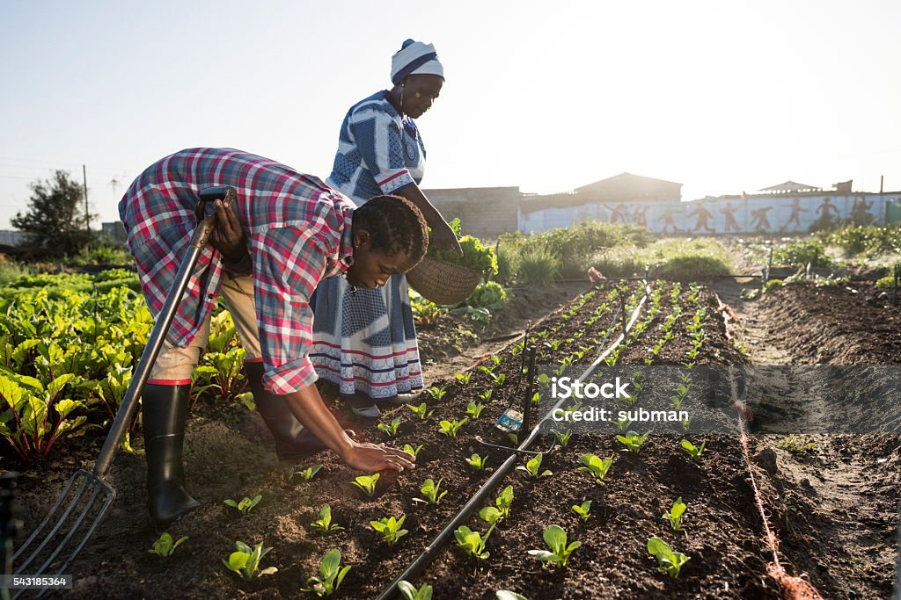
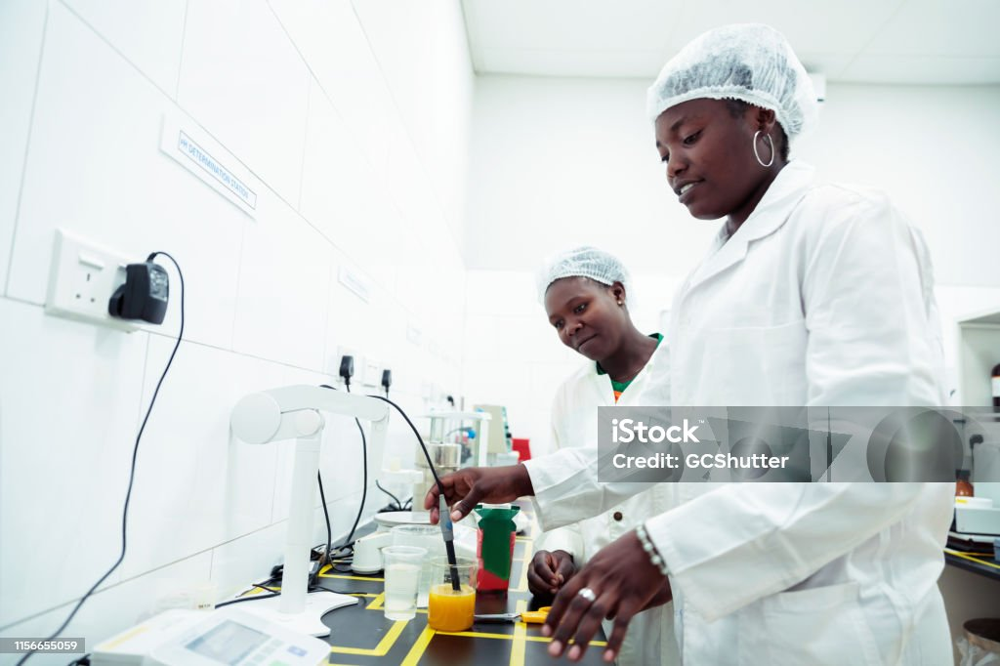

Current Projects
Urban Farming Initiative
Teaching students how to grow food in urban environments using innovative techniques like vertical farming and hydroponics.

Sustainable Agriculture Workshop
Workshops focused on sustainable farming practices, including soil health, water conservation, and organic farming methods.

Agricultural Technology Lab
Hands-on projects that allow students to experiment with the latest agricultural technologies, such as drones, sensors, and automation.
